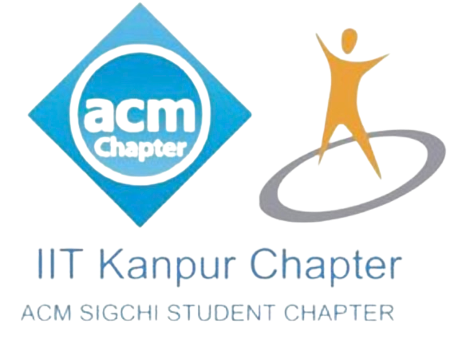
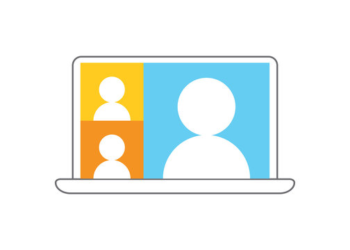

Welcome to the IIT Kanpur ACM SIGCHI student chapter! You could be a to-be software engineer. A psychology buff. Or, you could simply be intrigued by the way humans and computers work. We invite all of you to join hands with us! At SIGCHI, we aim to foster a interdisciplinary community of students and faculty contributing to the research and practice of human-computer interaction (HCI).
About
Welcome to the IIT Kanpur ACM SIGCHI student chapter! You could be a to-be software engineer. A psychology buff. Or, you could simply be intrigued by the way humans and computers work. We invite all of you to join hands with us! At SIGCHI, we aim to foster a interdisciplinary community of students and faculty contributing to the research and practice of human-computer interaction (HCI).
Achivements
- UnMute Project: The UnMute Project, funded by EPSRC and led by the University of Edinburgh and Swansea University, in collaboration with Translators Without Borders and Auris Tech, seeks to overcome barriers in speech and voice-based interactions for digitally marginalized populations. By addressing the limitations faced by millions globally, particularly those with low digital and textual literacy, the project aims to develop innovative solutions to unlock economic, social, and educational opportunities through intelligent interfaces. The ultimate goal is to create a blueprint and toolkit that can benefit low or zero-resource language communities worldwide. Specifically, we wish to digitally integrate speakers of non-scripted languages such as Tulu, Khasi etc.
- alJeevan Mission: We have collaborated with JalJeevan Mission to develop the app which utilises ML techniques and algorithms to detect leakage at certain locations. The project saves a lot of water, potentially serving thousands.
- AstroDesign Odyssey: With Techkriti, we organised AstroDesign Odyssey (Human-Centric Design) Contest, which achieved participation from 50+ colleges and had both national and international students. The pre-contest workshop on HCI and its applications also received overwhelming participation.
- Awareness Sessions: We have organised several awareness sessions and meetups to discuss potential use cases of HCI, and how we could contribute to build solutions for HCI and human computer interaction. Through our sessions, we have successfully contributed to spread awareness of the field, and motivate more people to take up courses and projects in HCI.
Events
